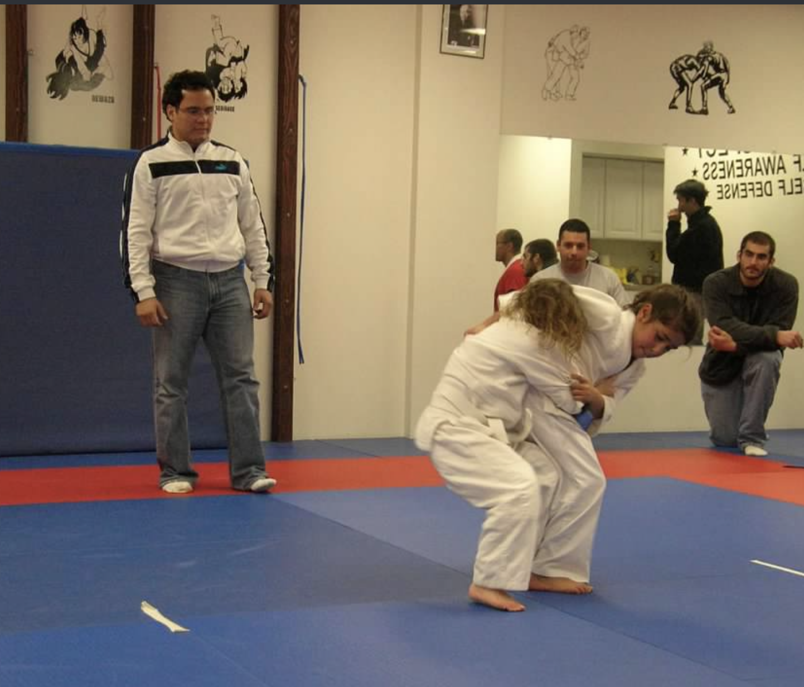
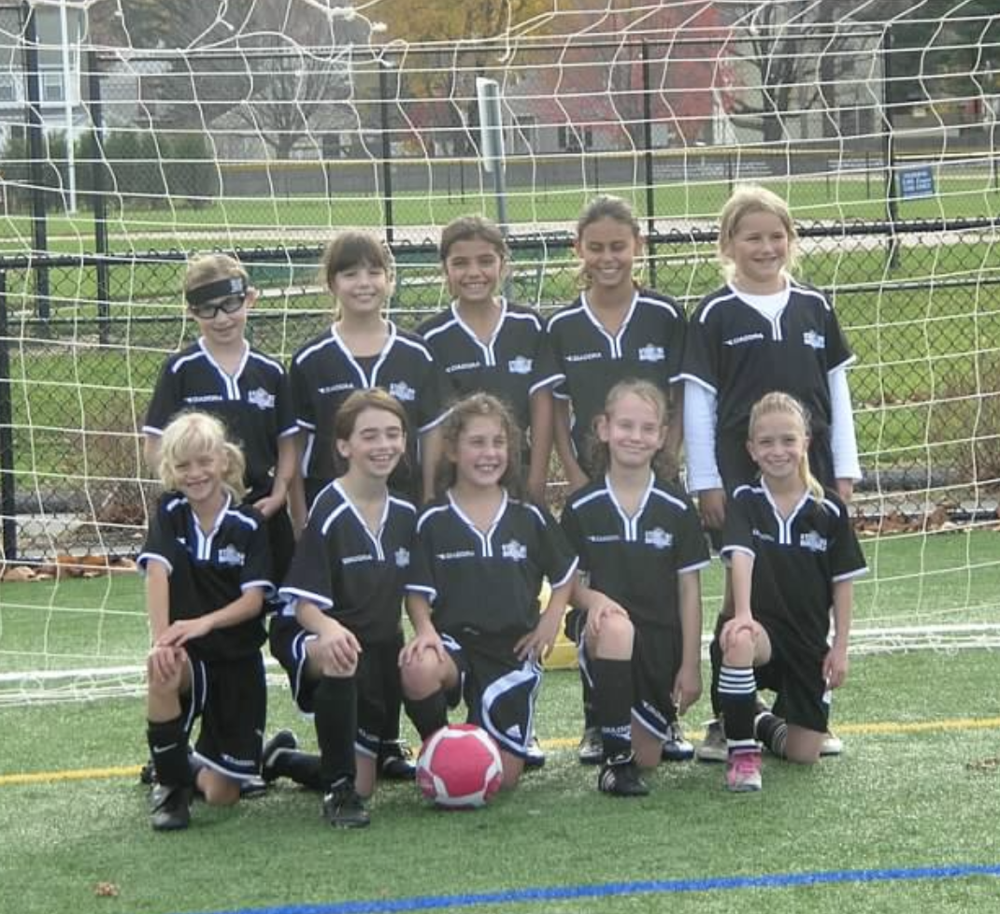
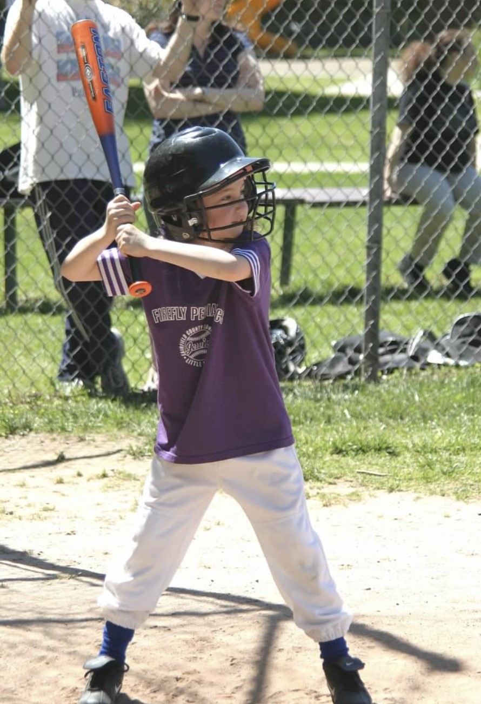

All my life I have been a very active person. Whether it was through sports, working out or playing outside with my friends, I was always moving.
From the age of 5, I have been an avid soccer player. I started off slow on a house league team for fun and gradually worked my way up to club soccer. I spent every week practicing and playing games for the majority of the year. The only time I had off was during the summers. Soccer was the primary way I kept active. When I got to high school, I made it on the varsity team as a freshman. By senior year, I was captain of the team. However, this didn't come without struggles. I tore my ACL my junior year during the first scrimmage of the high school season which put me out for a year. After a long recovery I made it back on the field.
When I got to college, I knew soccer wasn't something I wanted to continue so I had to find another way to stay active and healthy. I started taking spin classes at a local spin studio, but that was cut short when the virus hit. I was home in quarantine for months. After sitting on the couch all day every day, I decided I needed to do something. I started watching Youtube workout videos and doing them in my basement. I kept that up until we came back to school in the fall where I started going to the Nick. I try to go 3-4 times a week.
Another activity I found a passion for during quarantine was going on walks and bike riding with friends and family. Since we couldn't be together inside, we decided to social distance outside to get some fresh air. This became a daily thing for my friends and I. We'd always meet up in my neighborhood and ride our bikes around for hours. We had nothing better to do! Walking was something I did more with my mom. She walked around the neighborhood with her friends previously, so this wasn't new to her. I decided to join her one day and actually found it to be very relaxing. It was a good thing to do to clear my head and stop thinking about the virus.
  These are photos of me taken by my mom when I was younger trying out all different sports.